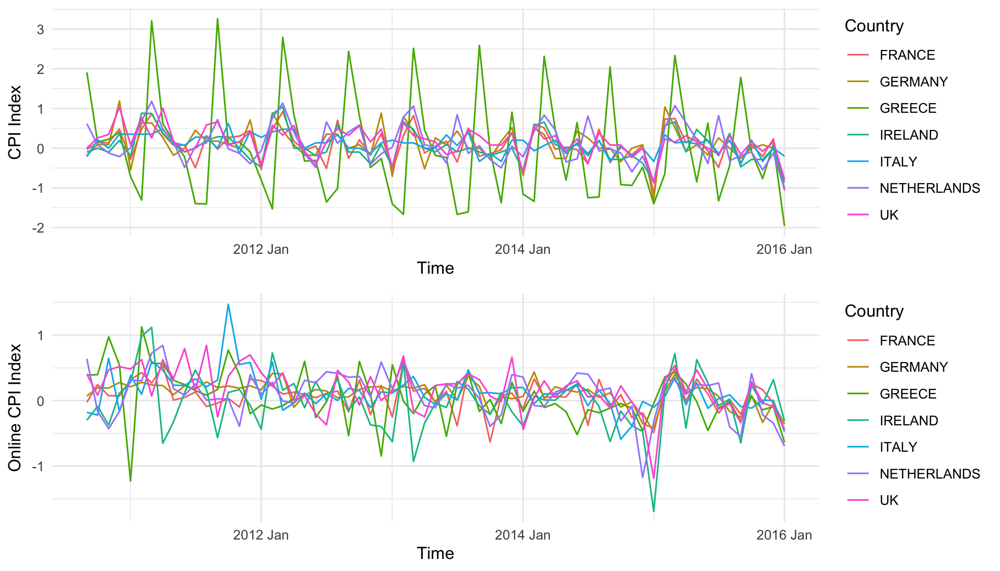
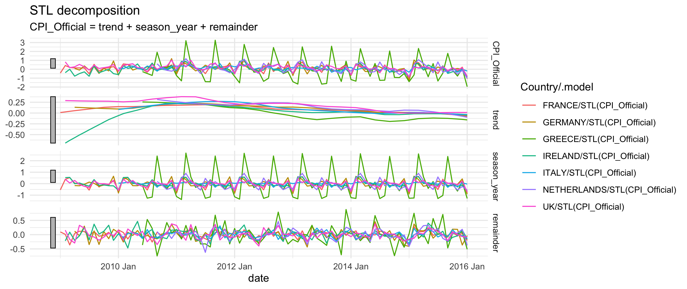
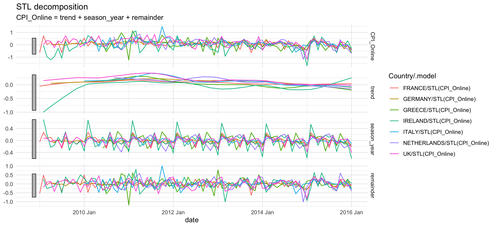

Official and Online Infation Spillover analysis of the Euro Area
The University of Queensland
Background - Inflation
Inflation is directly linked to the determination of the domestic interest rate and maintaining purchasing power.
Central bank: Controlling economic activity and performance.
Globalisation
National macroeconomic development is highly reliant on international changes.
Background - Volatility Spillover
Provides “early warning systems” for emergent crises and tracks the progress of existing crises.
Allows for network analysis: how markets and countries’ economies are connected.
Diebold and Yilmaz (2009) introduced a volatility spillover measure based on Forecast Error Variance Decompositions (FEVD) from Vector Autoregressions (VARs) Models.
The DY method can be used for measuring the spillovers in returns or return volatilities.
It can also be used for measuring the co-movements between countries’ inflation.
Background - Inflation Co-movements
The inflation spillover, or the co-movement, has been studied by other researchers.
Kang et al. (2019), using the Harmonised Index of Consumer Prices (HICP) consumer price indexes (CPIs) from 9 European countries, found the transmission of economic information across inflation levels.
Among the 9 countries, including France, Germany, Spain, Italy, the UK, Sweden, Switzerland, Denmark and Norway, France and Germany were net transmitters of spillovers.
Italy and the UK were net recipients of spillovers.
Background - Official vs Online Price Index
With the growth of online shopping, the Billion Prices Project was initiated to experiment with online price indexes by Cavallo (2017).
The unprecedented amount of micro-level prices available online was collected to form an aggregated online price index.
Online prices were collected at higher frequency.
Online prices are transparent.
Aim
- This research aims to evaluate the speed and magnitude of the spillover between the official inflation and the online inflation.
Data
The data used in this project were from Aparicio and Bertolotto (2020), where they used online prices for forecasting inflation.
Countries included in this analysis: Australia, Canada, France, Germany, Greece, Ireland, Italy, the Netherlands, the UK, and the US.
The range of the data covered from July 2008 to September 2020.
The official CPIs were collected from the National Statistics Office.
The Online CPIs were from the Billion Prices Project.
Data - Official Inflation and Online Inflation

Method: Seasonal Trend Loess Decomposition - Official CPI

Method: Seasonal Trend Loess Decomposition - Online CPI

Method - Vector Autoregressive Model (VAR)
The spillover measurement is based on forecast error variance decomposition (FEVD) from a vector autoregressive (VAR) model (Diebold and Yilmaz, 2009).
For this study, VAR(1) was selected based on information selection criteria.
The VAR(1) model was estimated as shown:
\[
Y_{t} = \mu + A_{1}Y_{t-1} + e_{t}
\] where \(Y_{t}\) is a vector containing all the inflation indices from the selected countries. \(A_{1}\) is a 7 by 7 matrix.
Method - Vector Moving Average
Re-write the equation into a moving average representation:
\[
Y_{t} = (I - A_{1})^{-1}\mu + \Phi(L)\varepsilon_{t}
\]
where \(\Phi(L) = (I- A_{1}L)^{-1}Q_{t}^{-1}\), \(\varepsilon_{t} = Q_{t}e_{t}\), \(E(\varepsilon_{t}\varepsilon_{t}') = I\), \(Q_{t}^{-1}Q_{t} = \sum e_{t}\).
\(Q_{t}^{-1}\) is a lower triangular matrix from the Cholesky factorisation of the variance-covariance matrix of \(\varepsilon_{t}\).
Method - choice of Cholesky ordering
With Cholesky factorisation, the order of the variables in the VAR system might result in different variance decompositions (Diebold and Yilmaz, 2012).
Aggarwal and Goodell (2010) suggest that one possible way of ranking the national financial influence is to use the ratio of domestic stock market capitalisation to GDP over domestic assets of deposit money to bank capitalisation to GDP.
Rank chosen to be: the UK, France, Netherlands, Ireland, Italy, Greece and Germany.
Method - FEVD
Forecast Error Variance Decomposition was calculated by feeding a shock to the UK at one, four and twelve months.
The individual shock contribution is defined as the contribution of the \(i^{th}\) to the mean square forecast error (MSFE) of the \(n^{th}\) variable \(y_{n, t+h}\) \(h\) periods ahead:
\[
\frac{MSFE^{n}_{i}(h)}{\sum^{N}_{i=1}MSFE^{n}_{i}(h)}
\]
Because the shocks to each variable are orthogonalised, the sum of the contributions to the variance of the forecast error is equal to 1.
Method - DY Spillover
The DY spillover is given by:
\[
Spillover = \frac{\sum^{N}_{i=1}\sum^{N}_{j=1}Var(\mu_{t+h}|t)_{ij}}{100N}
\]
where \(N\) is equal to 7 as there are 7 countries in the system.
Results - FEVD after 1 month
Official Inflation FEVD - 1 month
| 1.000 |
0.000 |
0.000 |
0.000 |
0.000 |
0.000 |
0.000 |
| 0.188 |
0.812 |
0.000 |
0.000 |
0.000 |
0.000 |
0.000 |
| 0.243 |
0.092 |
0.665 |
0.000 |
0.000 |
0.000 |
0.000 |
| 0.183 |
0.092 |
0.002 |
0.723 |
0.000 |
0.000 |
0.000 |
| 0.110 |
0.289 |
0.000 |
0.021 |
0.579 |
0.000 |
0.000 |
| 0.063 |
0.050 |
0.038 |
0.030 |
0.006 |
0.813 |
0.000 |
| 0.451 |
0.181 |
0.022 |
0.009 |
0.047 |
0.004 |
0.287 |
Online Inflation FEVD - 1 month
| 1.000 |
0.000 |
0.000 |
0.000 |
0.000 |
0.000 |
0.000 |
| 0.126 |
0.874 |
0.000 |
0.000 |
0.000 |
0.000 |
0.000 |
| 0.134 |
0.170 |
0.696 |
0.000 |
0.000 |
0.000 |
0.000 |
| 0.104 |
0.009 |
0.006 |
0.881 |
0.000 |
0.000 |
0.000 |
| 0.026 |
0.046 |
0.076 |
0.000 |
0.851 |
0.000 |
0.000 |
| 0.039 |
0.020 |
0.000 |
0.001 |
0.051 |
0.889 |
0.000 |
| 0.149 |
0.126 |
0.107 |
0.001 |
0.005 |
0.003 |
0.609 |
For Germany, one period after the shock is fed to the system, only 28.7% of the forecast error variance was explained by itself.
Compared to the official inflation, the inflation index constructed with online prices was less influenced by other countries.
Results - FEVD after 4 months
Official Inflation FEVD - 4 months
| 0.804 |
0.093 |
0.006 |
0.007 |
0.056 |
0.029 |
0.005 |
| 0.296 |
0.554 |
0.016 |
0.006 |
0.107 |
0.005 |
0.015 |
| 0.330 |
0.100 |
0.369 |
0.011 |
0.100 |
0.047 |
0.041 |
| 0.303 |
0.106 |
0.009 |
0.526 |
0.044 |
0.010 |
0.003 |
| 0.336 |
0.269 |
0.005 |
0.015 |
0.364 |
0.009 |
0.002 |
| 0.092 |
0.056 |
0.044 |
0.036 |
0.016 |
0.753 |
0.003 |
| 0.460 |
0.181 |
0.025 |
0.022 |
0.066 |
0.008 |
0.238 |
Online Inflation FEVD - 4 months
| 0.632 |
0.073 |
0.051 |
0.008 |
0.148 |
0.026 |
0.062 |
| 0.161 |
0.702 |
0.076 |
0.001 |
0.029 |
0.023 |
0.006 |
| 0.183 |
0.157 |
0.616 |
0.007 |
0.017 |
0.018 |
0.002 |
| 0.117 |
0.025 |
0.012 |
0.793 |
0.011 |
0.040 |
0.001 |
| 0.083 |
0.054 |
0.068 |
0.013 |
0.725 |
0.031 |
0.026 |
| 0.040 |
0.098 |
0.005 |
0.002 |
0.112 |
0.733 |
0.010 |
| 0.213 |
0.109 |
0.150 |
0.021 |
0.145 |
0.020 |
0.343 |
The UK’s official inflation is still largely self-determined.
For the online inflation index, the UK was less self-determined compared to the official inflation index after 4 months.
Results - FEVD after 12 months
Official Inflation FEVD - 12 months
| 0.781 |
0.107 |
0.007 |
0.006 |
0.064 |
0.030 |
0.005 |
| 0.318 |
0.529 |
0.016 |
0.006 |
0.109 |
0.008 |
0.014 |
| 0.349 |
0.109 |
0.344 |
0.010 |
0.102 |
0.046 |
0.039 |
| 0.322 |
0.113 |
0.009 |
0.492 |
0.049 |
0.011 |
0.003 |
| 0.362 |
0.263 |
0.006 |
0.014 |
0.342 |
0.012 |
0.002 |
| 0.099 |
0.058 |
0.044 |
0.035 |
0.018 |
0.743 |
0.003 |
| 0.468 |
0.183 |
0.024 |
0.020 |
0.070 |
0.010 |
0.225 |
Online Inflation FEVD - 12 months
| 0.607 |
0.075 |
0.056 |
0.009 |
0.162 |
0.027 |
0.063 |
| 0.162 |
0.692 |
0.077 |
0.002 |
0.036 |
0.023 |
0.007 |
| 0.184 |
0.157 |
0.610 |
0.007 |
0.021 |
0.018 |
0.003 |
| 0.117 |
0.026 |
0.013 |
0.789 |
0.013 |
0.040 |
0.002 |
| 0.089 |
0.058 |
0.070 |
0.014 |
0.710 |
0.031 |
0.028 |
| 0.042 |
0.098 |
0.006 |
0.002 |
0.113 |
0.729 |
0.011 |
| 0.215 |
0.110 |
0.148 |
0.022 |
0.159 |
0.021 |
0.326 |
For both official and online inflation, Germany is largely determined by other euro area countries and is primarily determined by the UK.
This unique relationship is explained by the equilibrium-adjusting behaviour between the UK and Germany explored by Canarella et al. (2014) in an analysis of their interest rates.
Discussion
The official and online inflation spillover share the same shape.
The official inflation has a higher magnitude in transmitting volatility than online inflation indices.
Where online inflation is not an official economic measurement index, policy makers and researchers do not use online inflation as a price benchmark in decision making.
Online prices are collected from a relatively small set of retailers and product categories compared to the comprehensive consumer prices survey conducted by the government (Cavallo and Rigobon, 2016).
Limitation
Diebold and Yilmaz (2012) suggest that the Cholesky ordering used in this study may have an impact on the variance decomposition.
Thus, another set of Cholesky ordering is chosen to check for robustness. The second set of Cholesky ordering is based on the geospatial relationships between the countries.
Similar results were obtained.
Reference
Aparicio, D. and M. I. Bertolotto (2020): Forecasting inflation with online prices,” International Journal of Forecasting, 36, 232{247.
Canarella, G., S. M. Miller, and S. K. Pollard (2014): Purchasing power parity between the UK and Germany: the euro era,” Open Economies Review, 25, 677{699.
Cavallo, A. and R. Rigobon (2016): The billion prices project: Using online prices for measurement and research,” Journal of Economic Perspectives, 30, 151{78.
Kang, S. H., J. A. Hernandez, and S.-M. Yoon (2019): leads the inflation cycle in Europe? Inflation cycle and spillover influence among Eurozone and non-Eurozone economies,” International Economics, 160, 56{71.
Tiwari, A. K., M. Shahbaz, H. M. Hasim, and M. M. Elheddad (2019): Analysing the spillover of inflation in selected Euro-area countries,” Journal of Quantitative Economics, 17, 551{577.
Thank you.
Contact email: danyang.dai@uq.edu.au
Github handle: @DanyangDai
Acknowledgement: this work was done under the supervision of Professor Kalvinder Shiel and Dr. Andrew Clarke as part of the Master of Applied Econometrics degree at the University of Melbourne.
This trip is supported by the University of Queensland.